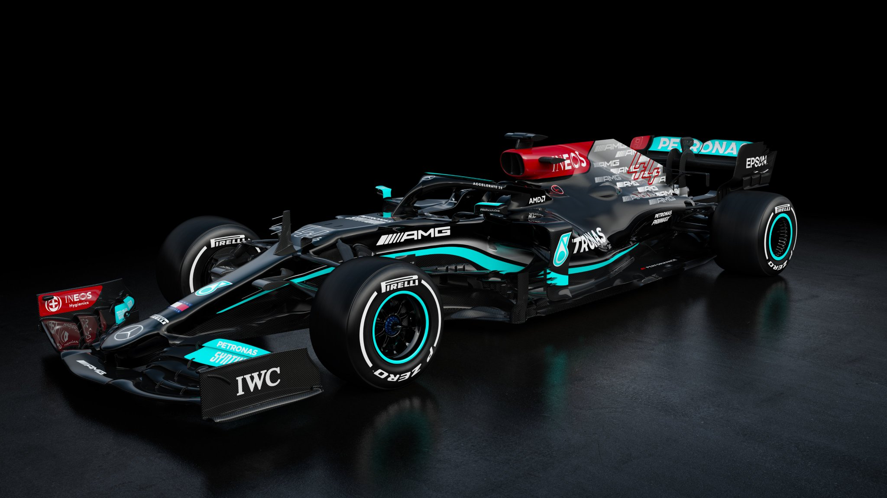

A Mercedes egy német Formula–1-es csapat, ami 2010 óta a Brawn GP utódjaként vesz részt a Formula–1-es világbajnokságban.
A Mercedes korábban 1954-55-ben szerepelt saját csapattal a versenysorozatban, akkor Juan Manuel Fangio mindkét évben világbajnok lett. A visszatérést követően a 2012-es kínai nagydíjon nyertek először futamot Nico Rosberg révén. 2014-ben a csapat nagy fölénnyel megszerezte első konstruktőr-világbajnoki címét az 1954–55-ös szereplés idején ezt még nem értékelték, és az egyéni világbajnokság is két versenyzője, Rosberg és Lewis Hamilton között dőlt el, kettejük vetélkedéséből év végén Hamilton került ki győztesen. 2015-ben Hamilton és a csapat is megvédte a címét. 2016-ban ismét a Mercedes nyerte mindkét világbajnoki címet, de a két pilóta közül ezúttal Rosberg kerekedett felül. Néhány nappal a bajnoki címe után Rosberg váratlanul bejelentette a visszavonulását. Helyét a Williamstől érkező Valtteri Bottas vette át. 2017-ben és 2018-ban a Ferrari a korábbinál versenyképesebb riválisnak bizonyult, de a Mercedesnek mindkét szezonban sikerült felülkerekednie, és Hamiltonnal újabb világbajnoki címeket szereznie. 2022-től Valtteri Bottas helyét George Russell veszi át.
